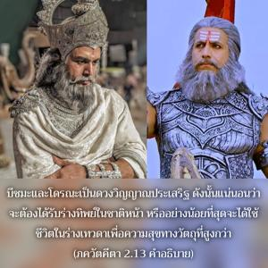
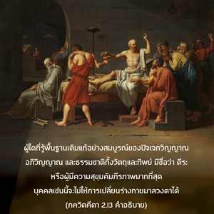

ดังเช่นดวงวิญญาณในร่างวัตถุ เดินทางผ่านจากร่างวัยเด็กมาสู่ร่างวัยรุ่น และเข้าสู่ร่างวัยชรา ในลักษณะเดียวกันดวงวิญญาณจะผ่านจากร่างหนึ่งไปสู่อีกร่างหนึ่งเมื่อตาย ผู้มีสติจะไม่สับสนต่อการเปลี่ยนแปลงเช่นนี้


เนื่องจากทุกชีวิตเป็นปัจเจกวิญญาณ แต่ละชีวิตจึงเปลี่ยนร่างกายอยู่ทุกๆวินาที บางครั้งเป็นร่างเด็ก บางครั้งเป็นร่างหนุ่มสาว และบางครั้งเป็นร่างคนแก่ แต่ว่าดวงวิญญาณดวงเดียวกันนี้จะคงอยู่โดยไม่มีการเปลี่ยนแปลง และในที่สุดปัจเจกวิญญาณนี้จะเปลี่ยนร่างเมื่อตาย และย้ายเข้าไปสู่อีกร่างหนึ่ง เราจะมีอีกร่างหนึ่งในชาติหน้าอย่างแน่นอน ซึ่งอาจจะเป็นร่างวัตถุหรือร่างทิพย์จึงไม่มีเหตุให้ อรฺชุน ทรงต้องเสียใจจากการตายของ ภีษฺม หรือ โทฺรณ ที่ทรงเป็นห่วงใยยิ่งนัก อรฺชุน ทรงควรยินดีในการเปลี่ยนจากร่างชราไปสู่ร่างใหม่ของท่านทั้งสองซึ่งทำให้ได้รับพลังงานใหม่ การเปลี่ยนร่างเช่นนี้นำไปสู่ความสุขหรือความทุกข์อย่างหลากหลายแล้วแต่กรรมหรือการกระทำในชีวิต ภีษฺม และ โทฺรณ เป็นดวงวิญญาณที่ประเสริฐ ดังนั้นพวกท่านจะต้องได้รับร่างทิพย์ในชาติหน้าอย่างแน่นอน หรืออย่างน้อยที่สุดจะได้ใช้ชีวิตในร่างเทวดาเพื่อความสุขทางวัตถุที่สูงกว่า ดังนั้นจึงไม่มีเหตุให้ต้องเสียใจไม่ว่าในกรณีใด
ผู้ใดที่รู้พื้นฐานเดิมแท้อย่างสมบูรณ์ของปัจเจกวิญญาณ อภิวิญญาณ และธรรมชาติทั้งวัตถุและทิพย์ มีชื่อว่า ธีร หรือผู้มีความสุขุมคัมภีรภาพมากที่สุด บุคคลเช่นนี้จะไม่ให้การเปลี่ยนร่างกายมาลวงตาได้
ทฤษฎีความเป็นหนึ่งของดวงวิญญาณโดย มายาวาที จะรับพิจารณาไว้ไม่ได้ บนฐานที่ว่าดวงวิญญาณไม่สามารถถูกตัดให้เป็นชิ้นเล็กชิ้นน้อยได้ หากดวงวิญญาณสามารถถูกตัดให้แบ่งแยกออกมาเป็นชิ้นเล็กชิ้นน้อยได้จะทำให้องค์ภควานฺทรงแตกแยกหรือเปลี่ยนแปลงได้ ซึ่งขัดกับหลักที่ว่าดวงวิญญาณขององค์ภควานฺทรงไม่มีการเปลี่ยนแปลง คีตา ได้ยืนยันไว้ว่าละอองอณูขององค์ภควานฺจะทรงเป็นอยู่นิรันดร ( สนาตน ) และเรียกว่า กฺษร หมายถึงดวงวิญญาณที่มีแนวโน้มตกต่ำลงสู่ธรรมชาติวัตถุ ละอองวิญญาณเหล่านี้จะเป็นเช่นนี้นิรันดร และหลังจากหลุดพ้นได้รับอิสรภาพแล้วปัจเจกวิญญาณยังคงเป็นละอองอณูเหมือนเดิม แต่เมื่อหลุดพ้นแล้วเขาจะใช้ชีวิตทิพย์ที่เป็นอมตะ มีความสุขเกษมสำราญ และมีความรู้ร่วมกับบุคลิกภาพสูงสุดแห่งพระเจ้า ทฤษฏีการสะท้อนกลับใช้ได้กับอภิวิญญาณที่ทรงประทับอยู่ในทุกๆร่างมีพระนามว่า ปรมาตฺมา พระองค์ทรงแตกต่างจากปัจเจกชีวิต เมื่อท้องฟ้าสะท้อนอยู่ในน้ำภาพสะท้อนนั้นจะปรากฏให้เห็นดวงอาทิตย์ ดวงจันทร์ และหมู่ดวงดาวได้เช่นกัน ดวงดาวเปรียบเสมือนกับสิ่งมีชีวิตทั้งหลาย ดวงอาทิตย์หรือดวงจันทร์เปรียบเสมือนองค์ภควานฺ อรฺชุน ทรงเปรียบเสมือนปัจเจกวิญญาณซึ่งเป็นละอองอณู และดวงวิญญาณสูงสุดคือ บุคลิกภาพสูงสุดแห่งพระเจ้าองค์ศฺรีกฺฤษฺณ ทั้งคู่ทรงมิได้อยู่ในระดับเดียวกันดังจะปรากฏให้เห็นในตอนต้นของบทที่สี่ หากว่า อรฺชุน ทรงอยู่ในระดับเดียวกันกับองค์กฺฤษฺณ และองค์กฺฤษฺณทรงไม่ได้ยิ่งใหญ่ไปกว่า อรฺชุน ความสัมพันธ์ระหว่างผู้สอนและผู้รับคำสอนจะไม่มีความหมาย เพราะทั้งคู่ถูกลวงตาด้วยพลังแห่งความหลง ( มายา ) ดังนั้นไม่จำเป็นต้องมีผู้สอนและผู้รับคำสอน การสอนเช่นนั้นจะไร้ประโยชน์เพราะว่าภายใต้อุ้งมือของพระนาง มายา ไม่มีผู้ใดเป็นผู้สอนที่เชื่อถือได้ ภายใต้สถานการณ์เช่นนี้เป็นที่ยอมรับแล้วว่าองค์ศฺรีกฺฤษฺณทรงเป็นองค์ภควานฺที่มีสถานภาพอยู่เหนือสิ่งมีชีวิต เช่น อรฺชุน ผู้ทรงเป็นดวงวิญญาณหลงลืมที่ถูกมายาครอบงำ